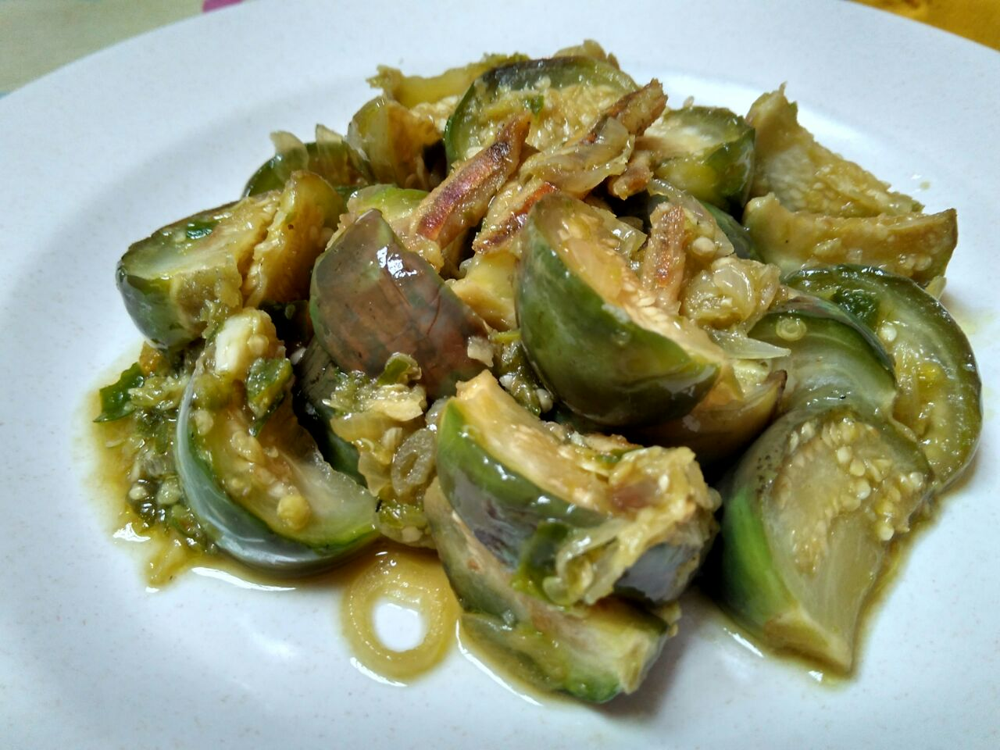

Resep Terong Kukus

Description:
One of easiest eggplant recipe with simple ingredients
Ingredients:
- 2 Eggplants standard size
- Half glass of water
- 1 spoon of Oyster Sauce
- 2 spoon of Soy Souce
You can add more ingredients, such as spring onions, chilli paste, etc.
Steps:
- Cut the eggplants into three parts
- Slice each part into half
- Pour water into your steamer pan
- Heat the water until it boils
- Put eggplants in steamer and cover with steamer lid
- Wait 5 minutes, try to pork eggplants. If it is soft, then it done. Make sure the eggplants not to soft and not to hard.
- Let it cool, then shred eggplants to make smaller pieces.
- Pour the Oyster sauce and Soy sauce on shredded eggsplants, then stir by hand or spoon until the sauce is evenly mixed.
- You can add it with another ingredients, such as spring onions, and chilli paste as you wish.